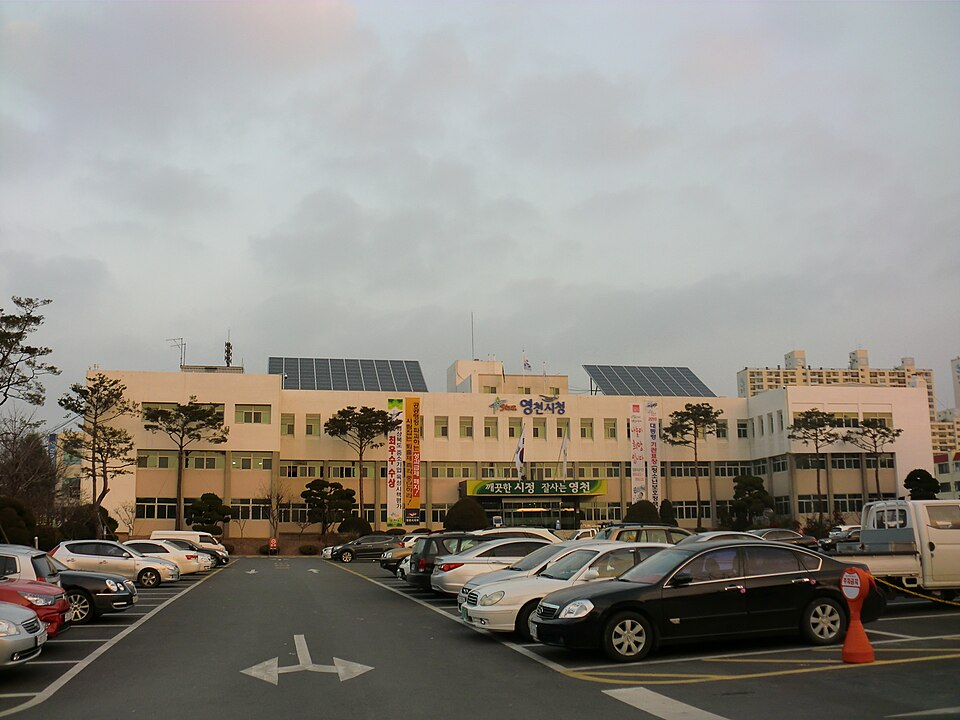

지역·대상별
영천 검정고시 — 20대에 다시, 늦지 않은 재도전

고등학교를 마치지 못한 채 사회로 나왔거나, 군 복무를 마치고 나서 “이제라도 학력을 갖추고 싶다”는 20대 분들이 영천 검정고시 과외를 많이 찾으세요. 결론부터 말하면, 20대는 검정고시를 준비하기에 오히려 좋은 나이예요. 그 이유와 준비법을 정리했습니다.
20대에 검정고시가 유리한 이유
- 학습 감각이 아직 살아 있어요 — 고등학교를 떠난 지 오래되지 않아, 기초 회복이 빠릅니다.
- 목표가 뚜렷해요 — 대학·취업·자격증 등 “왜 하는지”가 분명해 집중이 잘 돼요.
- 시간을 조절할 수 있어요 — 학생 신분이 아니어서 하루를 내 계획대로 쓸 수 있습니다.
짧게 끝내는 게 20대의 전략
20대는 대개 취업·입대·복학 같은 다음 일정이 있어요. 그래서 목표 회차를 정하고 짧게 끝내는 게 핵심입니다.
- 목표 회차 역산 — 다음 계획(취업·복학 등) 전에 합격하도록 시험일부터 거꾸로 계획을 짭니다.
- 수·영 먼저 — 시간이 오래 걸리는 과목을 앞에 두고, 정리 과목은 뒤에.
- 과목 합격제 활용 — 한 번에 안 되면 자신 있는 과목부터 확실히 붙여 둡니다.
합격 다음은 대학이든, 취업이든
고졸 검정고시에 합격하면 수능에 응시해 대학으로 갈 수도, 고졸 학력으로 취업·자격증을 준비할 수도 있어요. 20대의 선택지는 넓습니다. 어느 쪽이든 검정고시가 그 출발점이 돼요.
영천에서 이렇게 함께합니다
‘영천 근처 검정고시 학원’이나 ‘검정고시 인강’을 알아보셨더라도, 저희는 학원·인강이 아닌 1:1 맞춤 과외예요. 일하면서도 가능하도록 퇴근 후·주말 화상(줌) 수업과 방문 수업을 개인 일정에 맞춰 드립니다. 영천 어디든 가능해요.
20대의 다시 시작, 절대 늦지 않았어요. 다음 계획과 지금 상황만 알려주시면, 그 전에 합격하도록 무료로 계획을 짜 드립니다. 상담은 무료예요.